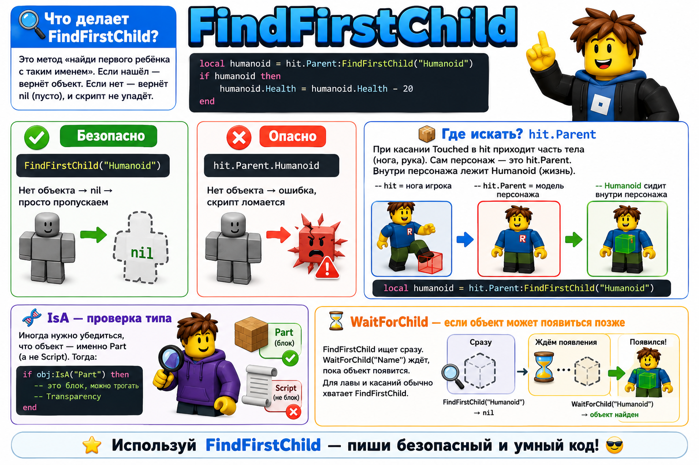

FindFirstChild: он ищет дочерний объект по имени и не ломает игру, если объекта нет.
🎯 На этом уроке ты:
- поймёшь, зачем нужен
FindFirstChildи чем он лучше точечной точки.🔍 - сам построишь модели: лаву, аптечку, облака, кактус 🏗️
- запрограммируешь урон и лечение через поиск
Humanoid❤️ - соберёшь целую «дорогу домой» и пройдёшь её 🏠
| Этап | Время | Что делаем |
|---|---|---|
| Теория FindFirstChild | 12 мин | Поиск, nil, IsA, квиз |
| Мини-игра «Найди ребёнка» | 8 мин | Кликами ищем объекты в дереве |
| Строим трассу | 12 мин | Путь, дом, Spawn |
| Модель Lava + скрипт | 14 мин | Урон через FindFirstChild |
| Модель HealPad | 12 мин | Лечение |
| Облака-ловушки | 14 мин | Исчезающие платформы |
| Кактус + финал | 10 мин | Модель из частей, пройти трассу |
| Доп. задания (фазы 5–7) | по желанию | Лёд, финиш, декор |
| Итого | 90 мин + доп. | — |
0 Теория: FindFirstChild

🔍 Что делает FindFirstChild?
Это метод «найди первого ребёнка с таким именем». Если нашёл — вернёт объект. Если нет — вернёт nil (пусто), и скрипт не упадёт.
if humanoid then
humanoid.Health = humanoid.Health - 20
end
FindFirstChild("Humanoid")Нет объекта →
nil → просто пропускаем
hit.Parent.HumanoidНет объекта → ошибка, скрипт ломается
📦 Где искать? hit.Parent
При касании Touched в hit приходит часть тела (нога, рука). Сам персонаж — это hit.Parent. Внутри персонажа лежит Humanoid (жизнь).
-- hit.Parent = модель персонажа
-- Humanoid сидит внутри персонажа
local humanoid = hit.Parent:FindFirstChild("Humanoid")
🧬 IsA — проверка типа
Иногда нужно убедиться, что объект — именно Part (а не Script). Тогда:
-- это блок, можно трогать Transparency
end
⏳ WaitForChild — если объект может появиться позже
FindFirstChild ищет сразу. WaitForChild("Name") ждёт, пока объект появится. Для лавы и касаний обычно хватает FindFirstChild.
⚡ Проверка
Что вернёт model:FindFirstChild("Humanoid"), если Humanoid нет?
⚡ Проверка
Игрок наступил на лаву. Где искать Humanoid?
parent:FindFirstChild("Name")if humanoid then ... endobj:IsA("Part")humanoid.Health = humanoid.Health - 20humanoid.Health = 100part.Touched:Connect(function(hit)🎮 Мини-игра: Найди ребёнка
Кликай по объекту в дереве — так работает FindFirstChild. Найди то, что просит задание.
Кликни объект, который вернёт эта команда.
Очки: 0 / 3
🗺️ С чего начать
Открой пустую Baseplate в Roblox Studio. Всё строишь сам с нуля — это и есть проект урока.
🏠 Проект «Дорога домой»
Собери трассу из своих моделей. Игрок идёт от старта к дому через ловушки.
урон −25
HP = 100
исчезают
урон −15
скользит
«ты дома!»
финиш
🛤️ Фаза 0 — Трасса и дом 12 мин
- Создай папку Parkour в Workspace.
- Построй дорожку из Part (серые плиты) длиной 40–60.
- В начале поставь SpawnLocation.
- В конце собери простой Home: пол + 4 стены + крыша (5–7 Part). Сложи в Model, назови Home.
🌋 Фаза 1 — Модель Lava (урон) 14 мин
Собери сам: широкий оранжевый/красный Part под разрывом дорожки. Имя Lava, Material = Neon, Anchored = true. Положи в Parkour.
Внутрь Lava — Script DamageScript:
lava.Touched:Connect(function(hit)
local humanoid = hit.Parent:FindFirstChild("Humanoid")
if humanoid then
humanoid.Health = humanoid.Health - 25
print("Ой, лава! HP: " .. humanoid.Health)
end
end)
if humanoid then касание обычного блока тоже вызвало бы ошибку. FindFirstChild + проверка — защита.💚 Фаза 2 — Модель HealPad (лечение) 12 мин
Собери сам: зелёный Part на дорожке после лавы. Имя HealPad. Можно сверху положить белую «подушку» (ещё один Part) — тогда сделай Model HealPad и скрипт повесь на нижний Part или на модель через GetChildren.
Простой вариант — один Part + Script:
pad.Touched:Connect(function(hit)
local humanoid = hit.Parent:FindFirstChild("Humanoid")
if humanoid then
humanoid.Health = 100
print("Отдохнул! HP = 100")
end
end)
☁️ Фаза 3 — Облака-ловушки 14 мин
Собери сам: папка Clouds в Parkour. Внутри 3 белых Part (Cloud1, Cloud2, Cloud3) — платформы над пропастью. Anchored = true.
В папку Clouds положи Script (один на все облака):
for _, cloud in pairs(folder:GetChildren()) do
if cloud:IsA("Part") then
cloud.Touched:Connect(function(hit)
if hit.Parent:FindFirstChild("Humanoid") then
cloud.BrickColor = BrickColor.new("Bright red")
cloud.CanCollide = false
for i = 1, 10 do
cloud.Transparency = i / 10
wait(0.08)
end
wait(1)
cloud.Transparency = 0
cloud.CanCollide = true
cloud.BrickColor = BrickColor.new("White")
end
end)
end
end
GetChildren, IsA("Part") и FindFirstChild("Humanoid").🌵 Фаза 4 — Модель Cactus с нуля 10 мин
Собери сам интересную модель:
- Создай Model с именем Cactus.
- Столбик (Part зелёный) + 2 «руки» сбоку (поменьше).
- Все Parts Anchored, сложи внутрь Model.
- PrimaryPart можно не ставить — скрипт повесим на каждую часть через цикл.
Script внутри Model Cactus:
for _, part in pairs(cactus:GetChildren()) do
if part:IsA("BasePart") then
part.Touched:Connect(function(hit)
local humanoid = hit.Parent:FindFirstChild("Humanoid")
if humanoid then
humanoid.Health = humanoid.Health - 15
end
end)
end
end
🧊 Фаза 5 (доп) — Модель Ice (скольжение) 10 мин
Поставь на дорожке перед домом голубой Part Ice (Material = Ice или Neon). При касании игрок «улетает» вперёд.
Script внутри Ice:
ice.Touched:Connect(function(hit)
local character = hit.Parent
local humanoid = character:FindFirstChild("Humanoid")
local root = character:FindFirstChild("HumanoidRootPart")
if humanoid and root then
root.AssemblyLinearVelocity = root.CFrame.LookVector * 60
print("Скольжение!")
end
end)
Humanoid и HumanoidRootPart. Оба через FindFirstChild — и оба проверяем через and.🏁 Фаза 6 (доп) — Финишная плита Finish 10 мин
Перед дверью дома поставь жёлтый Part Finish. Когда игрок дошёл — пишем победу в Output и чуть подкрашиваем дом.
local home = workspace.Parkour:FindFirstChild("Home")
finish.Touched:Connect(function(hit)
local humanoid = hit.Parent:FindFirstChild("Humanoid")
if humanoid then
print("🎉 Ты дома! HP: " .. humanoid.Health)
if home then
for _, part in pairs(home:GetChildren()) do
if part:IsA("BasePart") then
part.BrickColor = BrickColor.new("Bright yellow")
end
end
end
end
end)
workspace.Parkour:FindFirstChild("Home"). Если Home нет — скрипт не упадёт, просто не перекрасит.🌟 Фаза 7 (доп) — Укрась дорогу домой 12 мин
Сделай трассу красивее — всё своими руками или чуть из Toolbox (только декор).
- Ряд кактусов: скопируй Model Cactus (Ctrl+D) 2–3 раза вдоль дорожки.
- Вывеска у дома: Part «Sign» на крыше/стене → Insert Object → SurfaceGui → внутри TextLabel с текстом «ДОМ» или своим именем.
- Второй HealPad после кактусов (скопируй и переименуй) — на длинной трассе пригодится.
- Декор (по желанию): дерево/сундук/фонарь из Toolbox рядом с Home — без скриптов.
💡 Сегодня ты создал:
- свои модели Lava, HealPad, Clouds, Cactus, Ice, Finish, Home 🏗️
- скрипты с безопасным поиском
FindFirstChild(и даже два поиска подряд) 🔍 - рабочий паркур «Дорога домой» + доп. уровни 🏠